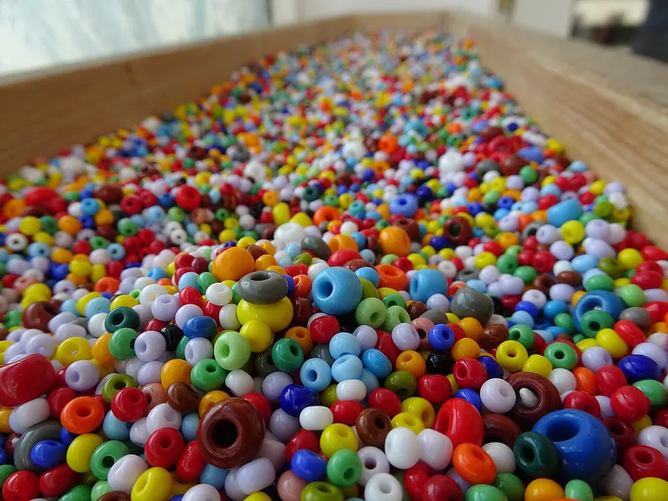
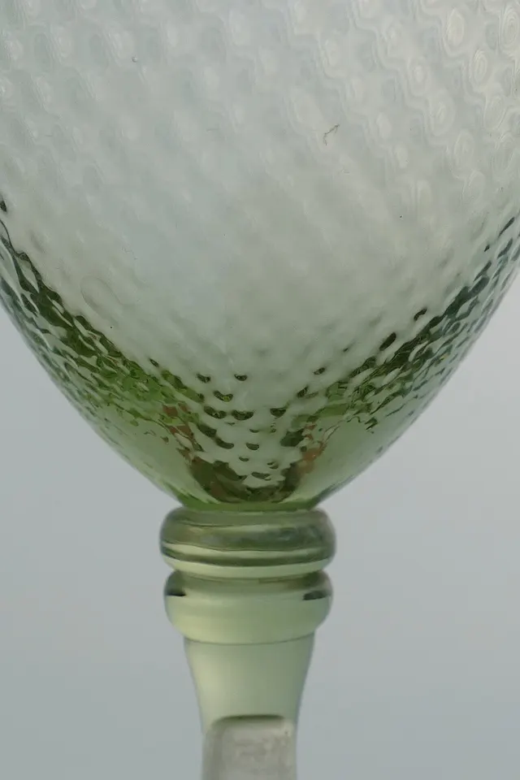
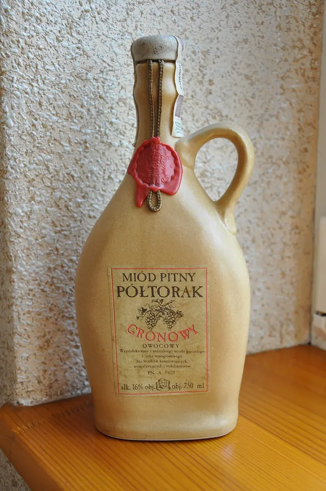

프라하 드레스덴
확인- 수단
- 기차 · EC(ČD·DB) 직행
- 소요
- 약 2시간 15분
- 환승
- 직행
엘베 계곡을 따라가는 경치 좋은 구간. 약 2시간 간격.
중부유럽 · 폴란드
Prague – Dresden – Wrocław – Kraków
보헤미아에서 작센을 스쳐 폴란드 남부로. 12월에는 크리스마스 마켓 네 곳을 잇는 코스.


프라하에서 엘베강을 따라 드레스덴으로 넘어가 하루 묵고, 폴란드 브로츠와프와 크라쿠프로 이어집니다. 독일은 드레스덴 1박뿐이고 나머지는 체코·폴란드입니다.


지도: © OpenStreetMap 기여자
현지 9박 10일 · 프라하 3박 → 드레스덴 1박 → 브로츠와프 2박 → 크라쿠프 3박
도착 인천 → 프라하 공항. 도착일은 숙소 주변 위주로 가볍게.
구시가 광장·천문시계 → 틴 성당 → 카를교 → 캄파섬. 해 질 무렵 블타바 강변에서 프라하성 야경.
천문시계는 매 정각에 움직입니다. 광장·카를교는 소매치기에 주의하세요.
숙박: 프라하
프라하성(성 비투스 대성당·황금소로) → 로레타 → 스트라호프 수도원 전망 → 말라스트라나 골목 → 페트린 언덕.
성은 오전 9시 개장 직후가 한산합니다.
숙박: 프라하
요세포프 유대인 지구 → 바츨라프 광장 → 국립박물관 → 비셰흐라드 요새 산책, 저녁에는 체코 맥줏집.
숙박: 프라하
이동 프라하 → 드레스덴 · 기차 약 2시간 15분 확인
프라우엔 교회 → 군주의 행렬 벽화 → 츠빙거 궁전 → 젬퍼 오페라 → 브륄의 테라스 야경.
12월 슈트리첼마르크트는 독일에서 가장 오래된 크리스마스 마켓으로 꼽힙니다.
숙박: 드레스덴
이동 드레스덴 → 브로츠와프 · 기차 약 3시간 35분 확인
리네크 광장·구시청사 → 소금 광장 → 난쟁이 동상 찾기 → 대학 아울라 레오폴디나 → 오스트루프 툼스키(대성당 섬) 가스등 점등.
12월 크리스마스 마켓이 폴란드에서 손꼽히게 화려합니다.
숙박: 브로츠와프
백주년 홀(유네스코)·분수 쇼 → 일본 정원 → 라츠와비체 파노라마 → 오데르 강변 카페.
숙박: 브로츠와프
이동 브로츠와프 → 크라쿠프 · 기차 약 3시간 10분 확인
플로리안 문 → 리네크 광장(직물회관·성 마리아 성당 나팔 소리) → 바벨 성·대성당 → 비스와 강변.
바벨 성 전시는 구역별 입장권이라 미리 고르세요.
숙박: 크라쿠프
카지미에시 유대인 지구 → 쉰들러 공장 박물관 → 게토 영웅 광장, 저녁에는 자피에칸카와 카페.
숙박: 크라쿠프
아우슈비츠-비르케나우 박물관(공식 사이트 사전 예약 필수, 왕복 포함 6~7시간) 또는 비엘리치카 소금광산(반나절).
두 곳을 하루에 묶으면 매우 벅찹니다. 하루에 한 곳을 권합니다.
숙박: 크라쿠프
오전에 못 본 곳을 둘러보고 공항으로 이동합니다. 귀국편은 대부분 다음 날 한국에 도착합니다.
엘베 계곡을 따라가는 경치 좋은 구간. 약 2시간 간격.
대부분 즈고젤레츠/괴를리츠에서 1회 환승, 3시간 15분~4시간. 중간에 괴를리츠 구시가지를 들를 수 있습니다.
국경 솅겐 지역 내 이동이지만 독일–폴란드·체코 구간은 임시 국경 검문이 있을 수 있어 여권을 지니세요.
바르샤바(LOT)·헬싱키·프랑크푸르트·뮌헨·이스탄불 등에서 1회 경유. 바르샤바 직항 + 기차(약 2시간 30분)도 방법입니다.
5·12월
1~2월
드레스덴 슈트리첼마르크트, 브로츠와프·크라쿠프 마켓이 모두 12월 하순까지 열립니다(날짜는 해마다 확인).
지나가는 나라마다 머무는 기간에 맞춰 골랐고, 비슷한 상품(와인끼리, 꿀끼리 등)은 하나만 넣어 10개 이내로 추렸습니다. 기간 탭을 바꾸면 도시에 맞게 다시 고릅니다.






카드를 누르면 나라별 쇼핑·기념품 페이지에서 구매처·반입 유의사항·사진 출처를 볼 수 있습니다. 사진은 Wikimedia Commons 자유 라이선스 사진입니다.


중기·장기(7~8박) · 3개국 · 추천 5·9·12월
첫 동유럽 여행의 정석. 직항으로 들어가 직항으로 나오고, 세 도시를 레일젯 직행으로 잇습니다.


중기(5~6박) · 2개국 · 추천 5·9·10월
프라하에 동화 같은 중세 마을 하나를 더해 비엔나로 빠져나가는 일주일 코스.


중기·장기(7~9박) · 3개국 · 추천 4·5·9월
비엔나를 건너뛰고 체코·슬로바키아·헝가리 세 나라를 한 철도 노선으로 잇는 실속 코스.


중기(5~6박) · 3개국 · 추천 4·10·12월
도나우강을 따라 세 수도를 잇는 5~7박 단기 코스. 12월 크리스마스 마켓 여행으로 특히 인기.
정보 확인일 2026-11-21